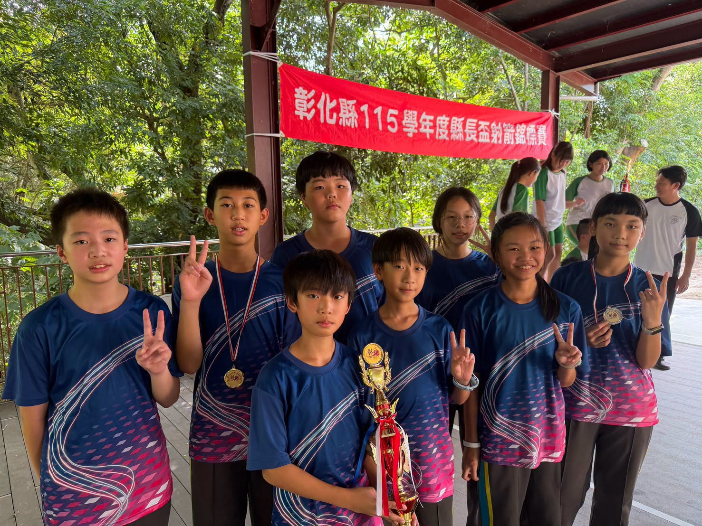
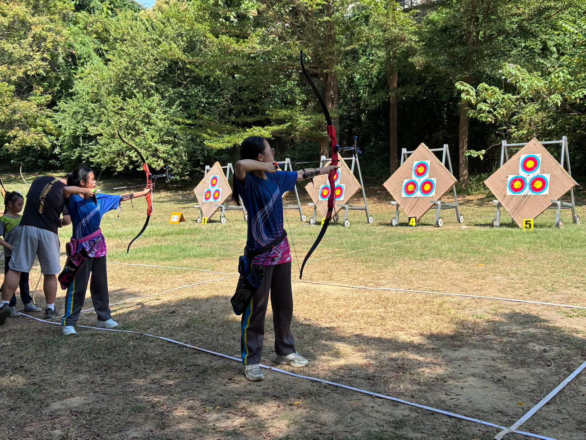

Hsinmin's archery team has done it again! Our school competed in the Changhua County SY115 Magistrate's Cup Archery Championship. This year, schools across the county sent more archers than ever before, and Hsinmin was represented by eight young archers — seven sixth graders and one fifth grader. Carrying the focus and persistence they build in everyday training, they stepped onto the field to challenge themselves — and brought home bright results for the school! 🏹
Boys' Individual · 1st Place
國小反曲弓10公尺男子組個人賽 第一名
Girls' Individual · 2nd Place
國小反曲弓10公尺女子組個人賽 第二名
Boys' Team · 2nd Place
國小反曲弓10公尺男子組團體賽 第二名
Boys' Individual · 7th Place
國小反曲弓10公尺男子組個人賽 第七名
All events: Elementary Recurve Bow, 10 m · 全部為國小反曲弓10公尺項目
A boys' individual championship, a runner-up finish in the girls' individual event, second place for the boys' team, and a seventh place in the boys' individual — together, these results show just how steady and solid Hsinmin's young archers have become!

Archery may look quiet, but it demands intense focus, steadiness, and mental strength. From drawing the bow to aiming and releasing, every movement tests an archer's patience and perseverance. Each medal reflects not only one day's performance, but the results of countless practices and corrections along the way.
A special thank-you to Tianzhong Senior High School coaches Hsieh Hao-jung and Hsiao Yao-tsung, who have long given their after-school time to train our children, helping them build experience step by step and push past their limits — and to the parents, whose constant support lets the children step onto the field with peace of mind and the courage to take on the challenge.
🏹 One arrow at a time, we shoot with focus;
one step at a time, we build strength!一箭一箭，射出專注；一步一步，累積實力！
Congratulations to all of our young archers — we look forward to seeing the Hsinmin archery team keep breaking new ground on the range!
新民國小射箭隊再創佳績！
本校參加「彰化縣115學年度縣長盃射箭錦標賽」，今年各校參賽學生人數比以往更多，新民國小共有8位小小射手代表學校出賽。孩子們帶著平時訓練的專注與堅持，站上賽場挑戰自我，也用亮眼的成績為學校爭光！
而今年的比賽成果更是令人振奮！
🏆 國小反曲弓10公尺男子組個人賽
🥇 第一名
🏅 第七名
🏆 國小反曲弓10公尺女子組個人賽
🥈 第二名
🏆 國小反曲弓10公尺男子組團體賽
🥈 第二名
其中，男子組個人第一名、女子組個人第二名，再加上男子團體第二名及男子組個人第七名，展現新民射箭小將穩定又扎實的實力！
射箭看似安靜，背後卻需要高度的專注力、穩定度與心理素質。從拉弓、瞄準到放箭，每一個動作都考驗著選手的耐心與毅力。
而一座座獎牌，不只是比賽當天的表現，更是孩子們平日一次次練習、一次次修正所累積的成果。
也要特別感謝田中高中謝昊融教練、蕭耀宗教練長期利用課餘時間指導孩子，陪伴新民小將一步步累積經驗、突破自己；更感謝家長們一路支持與陪伴，讓孩子們能安心站上賽場、勇敢挑戰。
🏹 一箭一箭，射出專注；一步一步，累積實力！
恭喜所有參賽的小選手，也期待新民射箭隊繼續在箭道上突破自我、再創佳績！
Tap 🔊 to listen · 點喇叭聽發音
Every arrow needs a calm mind and steady hands.每一支箭，都需要平靜的心和穩定的手。
The archers aimed at the center of the target.射手們瞄準箭靶的中心。
Hsinmin's boys' individual champion made the whole school proud.新民的男子個人賽冠軍，讓全校都引以為傲。
Each medal came from many days of training.每一面獎牌，都來自許多天的訓練。
Archery takes a lot of patience.射箭需要很大的耐心。
Every correction in practice adds up.練習時的每一次修正，都會一點一滴累積起來。
Match the word to its meaning
把英文和中文配對
Matched 配對成功：0 / 6